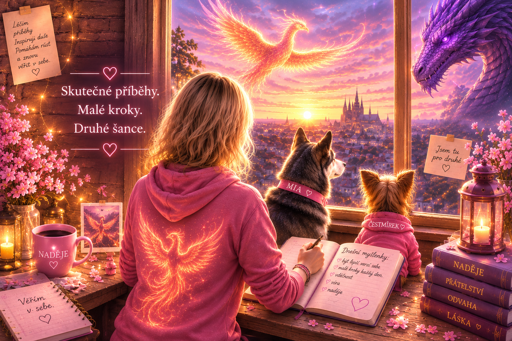

25. července 2026
Procházka, která léčila
Poklidná cesta parkem Klamovka, chvíle odpočinku a společný čas s maminkou. Další malý krok v uzdravování.
Otevřít knihu
Místo, kde se z obyčejných dnů stávají kapitoly.
Každý zápis je další krok na cestě.
Uzdravování není jen cesta zpátky ke zdraví.
Je to také cesta k lidem,
které máme nejraději.
🎵 Hudba Deníku Carmen

Archiv skutečných okamžiků, které změnily obyčejné dny v kapitoly jednoho velkého příběhu.
25. července 2026
Poklidná cesta parkem Klamovka, chvíle odpočinku a společný čas s maminkou. Další malý krok v uzdravování.
Otevřít knihuKaždodenní drobnosti, které pomáhají tělu i mysli znovu najít klid.
22. 7.Krátká procházka s maminkou a připomínka, že uzdravování není závod.
21. 7.Některé bitvy skončí na operačním sále. Ty nejtěžší začínají doma.
13. 7.Okamžik, kdy se zastavil čas a začala úplně nová kapitola.
3. 7.Den, kdy se z jedné myšlenky stal svět příběhů psaných srdcem.
Uzdravování není jen cesta zpátky ke zdraví. Je to také cesta k lidem, které máme nejraději.